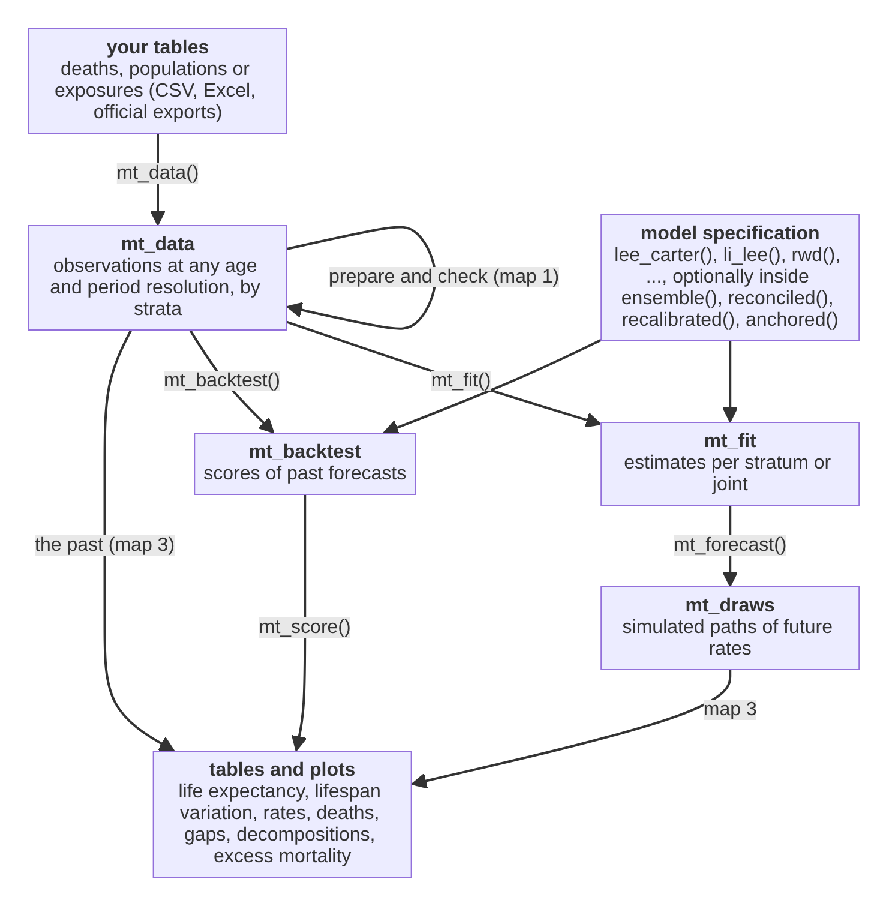
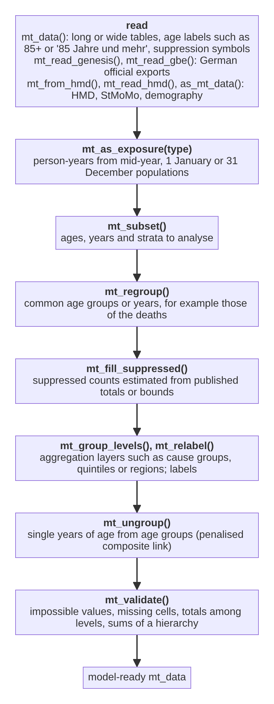
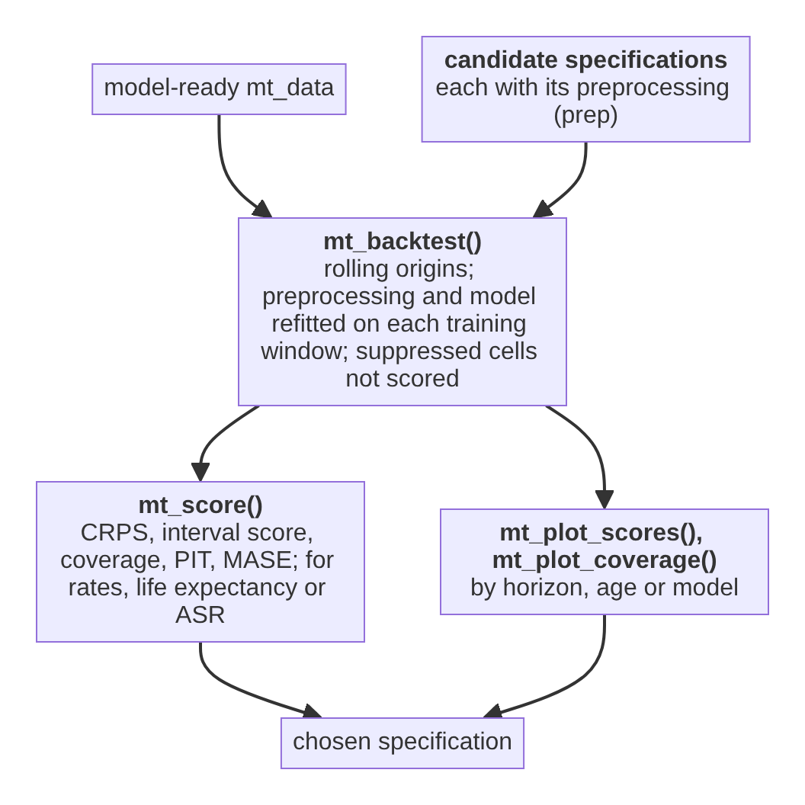
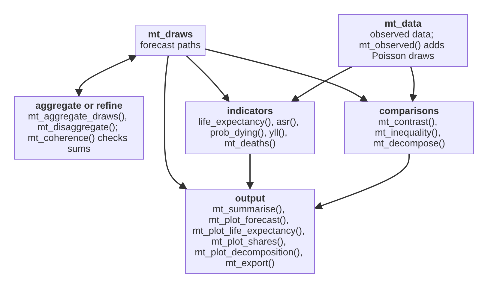

This page maps the functions of mortensor onto the steps of an analysis and shows how their results feed into each other. Each box names a function and its main purpose. Paths through the maps are workflows; the section “What is not covered” lists steps that need other tools.
The main path
Every analysis passes the same objects from top to bottom. The boxes are objects; the labels on the arrows are the functions that connect them.

Map 1: from tables to analysis-ready data
The steps in their usual order. Each is a decision about the data;
skip those a data set does not need. Every step returns an
mt_data object.

Smoothing is not a step of this map. mt_smooth() with
mt_smooth_check() and mt_plot_smooth() shows
what a smoother would do to the data; for forecasts, smooth inside the
fit with step_smooth() (map 2), so that observation noise
and backtests refer to the raw deaths. mt_fit() warns about
data smoothed beforehand and mt_backtest() refuses
them.
Map 2: models, coherence and evaluation
A model specification is one model, optionally inside wrappers.
Preprocessing steps given as prep are repeated in every
fit, so that backtests do not see the test years.
![Map 2, models: models for one population per stratum (including coda(), p_splines(), cp_splines(), bohk_rau(), apci() and nordpred_apc()) or for several strata jointly (including cae(), saint(), coda(coherent = TRUE), coda_multiway() and coda_causes()) form a model specification, optionally inside wrappers (ensemble(), stratified(), reconciled(), coupled(), recalibrated(), anchored(), bootstrapped(), tuned()) that may use a hierarchy from mt_hierarchy(); mt_fit() takes the specification, the model-ready data and optional preprocessing from mt_prep(); the fit is inspected (summary(), mt_parameters(), residuals()) or forecast with mt_forecast().](function-map-models.png)
Choosing between specifications:

tuned() and mt_tune() run the same
comparison inside a fit, over a grid of model and preprocessing settings
(for example the number of components and the smoothing of
hyndman_ullah(), or the fitting window), with rolling
origins or a single hold-out of the last years.
recalibrated() keeps the chosen model and rescales the
width of its intervals.
Map 3: from draws to results
Indicators and comparisons are computed path by path, so their intervals include the joint uncertainty of all strata. The same functions describe observed data.

Functions by purpose
| Step | Function | Purpose | Input | Output |
|---|---|---|---|---|
| Read | mt_data() |
read deaths, exposures, populations (long or wide, suppression symbols, shared populations) | data frames | mt_data |
| Read |
mt_add(), mt_add_deaths(),
mt_add_exposure(), mt_add_population()
|
add or replace one table |
mt_data, data frame |
mt_data |
| Read |
mt_read_genesis(), mt_read_gbe()
|
read German official exports | files |
mt_data, table |
| Read |
mt_from_hmd(), mt_read_hmd(),
as_mt_data()
|
read or convert HMD, StMoMo, demography data | objects, files | mt_data |
| Read |
mt_axis(), parse_age_labels(),
age_groups(), single_ages(),
single_years(), period_groups()
|
age and period axes from interval bounds or labels | bounds, labels | mt_axis |
| Read |
axis_widths(), axis_midpoints(),
is_open()
|
interval widths, midpoints and the open interval of an axis | mt_axis |
vector |
| Prepare | mt_as_exposure() |
exposures from populations (type required) |
mt_data |
mt_data |
| Prepare | mt_subset() |
restrict ages, years, strata | mt_data |
mt_data |
| Prepare |
mt_strata(), mt_obs(),
mt_grid(), mt_set_grid(),
mt_granularity()
|
look at strata (with their level in a hierarchy), tables, their resolution and the modelling grid | mt_data |
table, grid |
| Prepare |
mt_array(), mt_operator()
|
data as arrays on the grid; the matrix that sums grid cells to observed cells (for your own models) | mt_data |
array, matrix |
| Prepare |
mt_group_levels(), mt_relabel()
|
aggregation layers, recode labels | mt_data |
mt_data |
| Prepare | mt_fill_suppressed() |
estimate suppressed counts |
mt_data, hierarchy or bounds |
mt_data |
| Check | mt_validate() |
plausibility and hierarchy checks | mt_data |
findings |
| Harmonise |
mt_regroup(), mt_ungroup(),
mt_smooth()
|
common resolution, single years (PCLM or monotone interpolation), smoothing over age, time or both | mt_data |
mt_data |
| Harmonise |
mt_plot_ungroup(), mt_ungroup_check()
|
ungrouped against grouped rates, stability over time, errors against known single years; several methods side by side |
mt_data and ungrouped data (or a list) |
ggplot, table |
| Harmonise |
mt_smooth_check(), mt_plot_smooth()
|
how much smoothing removed (dispersion, trend ratio); several smoothers in one figure |
mt_data pair or list |
table, ggplot |
| Harmonise |
mt_prep(), mt_prep_apply() with
step_ungroup(), step_smooth(),
step_regroup(), step_grid(),
step_shocks(), step_window()
|
preprocessing inside fits and backtests | steps | pipeline |
| Model |
lee_carter() (optionally rotated, with negative
binomial deaths and a dispersion by age, or with averaged, filtered or
constrained jump-off), rwd(), p_splines()
(optionally with a dispersion by age), cp_splines(),
bohk_rau(), li_lee(), cae()
(optionally with a common drift), saint(),
relative_model(), hyndman_ullah(),
coherent_fdm(), coda() (also coherent),
coda_multiway(), stmomo() (including the Plat
model), apci(), stanmomo(),
arima_series(), ets_series(),
apc_bayes(), nordpred_apc(),
tucker3(), coda_causes() (also 2S-CoDA);
deprecated: rwd(observation_noise = TRUE) (use
arima_series(order = c(0, 1, 1), drift = TRUE)),
tucker3(transform = "coda") (use
coda_multiway()) |
model specifications | settings | mt_spec |
| Model |
apc_select(), mcmc_control(),
mt_tune()
|
choose random-walk orders, MCMC settings; model and preprocessing settings by forecast accuracy on the last years (hold-out or rolling origins; rates, life expectancy or ASR) | data, grid | table, mt_spec
|
| Combine |
ensemble() (weights equal, by stacking with the CRPS,
by the life expectancy bias of Kontis et al. or inverse to the CRPS;
optionally top_k), stratified(),
reconciled() (also score-optimal,
method = "energy_score"; weights from past errors,
covariance = "errors"; Schaake shuffle,
dependence = "schaake", or of whole stratum paths,
dependence = "empirical"), coupled(),
bootstrapped(), tuned()
|
mixtures, different models for groups of strata, coherence,
dependence between strata from a joint model (ensemble copula coupling)
or from past years (Schaake shuffle), parameter uncertainty (and of
smoothing, type = "data"), tuning |
mt_spec |
mt_spec |
| Combine | mt_order_strata() |
keep an ordering between strata (for example women below men) path by path | mt_draws |
mt_draws |
| Combine | mt_couple() |
give the draws of separate forecasts the dependence between ages,
years and strata of the draws of a joint model (ensemble copula
coupling, as coupled()) |
two mt_draws
|
mt_draws |
| Calibrate | recalibrated() |
rescale the spread (optionally the drift) of any model’s draws to
its forecast errors in the last years, overall, by age band or by
horizon, for rates, life expectancy or ASR; or add resampled errors of
its past forecasts to its median (method = "errors") |
mt_spec |
mt_spec |
| Jump-off |
anchored(), mt_jump_off();
lee_carter(jump_off = )
|
start forecasts at the observed rates of the last year (optionally of several years, shrunk and fading out), at their mean over the last years, at the Kalman filter estimate or from a fit constrained to the last year; report the first-year step |
mt_spec, mt_draws
|
mt_spec, table |
| Coherence |
mt_hierarchy(), mt_aggregate_strata(),
mt_reconcile() (with fixed nodes;
"proportional" scales the parts of fixed nodes),
mt_aggregate_draws()
|
define and apply totals of strata | hierarchy |
mt_data, mt_draws
|
| Coherence |
mt_coherence(), mt_plot_coherence()
|
sum of parts over aggregate, per year |
mt_draws, hierarchy |
table, ggplot |
| Fit | mt_fit() |
estimate |
mt_spec, mt_data
|
mt_fit |
| Inspect |
summary(), mt_parameters(),
fitted(), residuals(),
mt_plot_residuals()
|
model, assumptions, estimates, fit | mt_fit |
text, table, plot |
| Forecast |
mt_forecast(), mt_summarise()
|
simulated paths and their quantiles | mt_fit |
mt_draws, table |
| Evaluate |
mt_backtest(), mt_score()
|
rolling-origin scores of rates, life expectancy or ASR, and of gaps
between strata (contrast); the number of cells without
deaths, floored at half a death (n_floored); optional SAPE,
90% coverage and interval half-widths of life expectancy (Raftery et
al. 2013) and revisions between consecutive origins, with the robustness
of Stoeldraijer et al. 2018 (measures) |
mt_spec, mt_data
|
table |
| Evaluate |
mt_compare(), mt_score_table()
|
backtests of several models on the same origins; scores of rates, life expectancy and gaps side by side, by level of a hierarchy or by horizon | named list of mt_spec, mt_data
|
table |
| Evaluate | mt_dm_test() |
Diebold-Mariano tests: is one model more accurate than another, per horizon, beyond chance? | backtest from mt_compare()
|
table |
| Evaluate |
mt_plot_scores(), mt_plot_coverage(),
mt_plot_pit(), mt_plot_backtest_design(),
mt_plot_tuning()
|
scores by horizon or model, interval coverage, PIT histograms, the design of a backtest, tuning scores | backtest, tuning | ggplot |
| Describe | mt_observed() |
observed rates as draws | mt_data |
mt_draws |
| Report |
life_expectancy(), asr(),
prob_dying()
|
indicators path by path, observed or forecast |
mt_draws or mt_data
|
table |
| Report | lifespan_variation() |
e-dagger, entropy, Gini, standard deviation, coefficient of variation and interquartile range of the age at death |
mt_draws, mt_data or rates |
table, array |
| Report | mt_pessimism() |
how much lower life expectancy is when causes are forecast separately and summed than in an all-cause forecast (Wilmoth 1995), by age and cause, or approximated from two observed periods |
mt_draws (total and causes) or
mt_data
|
table |
| Report |
mt_excess(), mt_plot_excess()
|
excess deaths, P-scores and loss of life expectancy against the expected values of a baseline model, by age, stratum and year |
mt_fit or mt_spec,
mt_data
|
table, ggplot |
| Report |
yll(), mt_deaths()
|
years of life lost, deaths with projected populations | mt_draws |
table, array |
| Report |
life_table(), standard_population()
|
life tables from rates (open interval closed by one of nine hazard
laws or by AIC, open); standard populations esp2013,
esp1976, who2000 |
rates, name | table |
| Check | mt_open_check() |
old-age hazard laws fitted below a cut age and scored against the observed deaths above it | mt_data |
table |
| Report |
mt_contrast(), mt_inequality(),
mt_plot_contrast()
|
gaps, ratios, SII, RII; gaps over time |
mt_draws or mt_data
|
table, ggplot |
| Report |
mt_compare_forecasts(),
mt_plot_compare()
|
one quantity of several forecasts (models, jump-off choices, reconciliation methods) side by side | named list of mt_draws or mt_data
|
table, ggplot |
| Report |
mt_decompose(),
mt_plot_decomposition()
|
differences in life expectancy (or other summaries) by age, cause and subgroup composition: Arriaga, Horiuchi, stepwise replacement, Kitagawa, Arriaga meets Kitagawa; jump-off share and changes of gaps |
mt_draws or mt_data (or both; also census
years with gaps) |
mt_decomposition, table, ggplot |
| Report |
mt_plot_forecast(), mt_plot_age(),
mt_plot_life_expectancy(), mt_plot_shares(),
mt_plot_rates(), mt_plot_tucker(),
mt_export()
|
figures and CSV files | draws, data, tables | ggplot, file |
| Data |
ons_data, ons_cause_groups,
de_deaths, de_population,
de_cause_groups, mt_example(),
mt_example_causes(), mt_example_regions()
|
example data (published and simulated) | tables, mt_data
|
|
| Report |
theme_mortensor(),
scale_colour_mortensor(),
scale_fill_mortensor(), mt_palette()
|
the package’s plot style for your own figures | theme, scales | |
| Disaggregate |
mt_disaggregate(), mt_shape_rates(),
mt_disaggregate_check(),
mt_plot_disaggregation()
|
forecasts on finer ages with a fixed age shape within each group | mt_draws |
mt_draws, table, ggplot |
| Exchange |
as_demogdata(), as_stmomodata()
|
cross-checks with demography and StMoMo | mt_data |
demogdata, StMoMoData
|
| Extend | new_mt_spec() |
constructor for developers adding a model (methods for the internal
generics fit_model() and
simulate_model()) |
model name, parameters | mt_spec |
What is not covered
These steps of a mortality analysis need other tools or are open development points:
-
Population projections. mortensor forecasts death
rates; future exposures (for expected deaths) come from a population
projection, for example of the statistical office, passed as
exposure. -
Spatial models for small areas. There is no model
with spatial smoothing between neighbouring regions (such as BYM
models), and no relational model for small populations (such as TOPALS);
pooling works through common trends (
li_lee()); Bayesian APC models smooth over age, period and cohort within each stratum. - Models of life expectancy. Models that forecast life expectancy itself (such as the Bayesian models of the UN or the double-gap model) are not implemented; mortensor forecasts rates and derives life expectancy from them.
-
Multiple imputation of suppressed cells.
mt_fill_suppressed()returns one estimate; the uncertainty of suppressed counts is not carried into forecasts. - Causes of death with changing coding. ICD revisions and coding changes (for example of dementia) are not bridged; cause groups that span the affected codes reduce the problem.